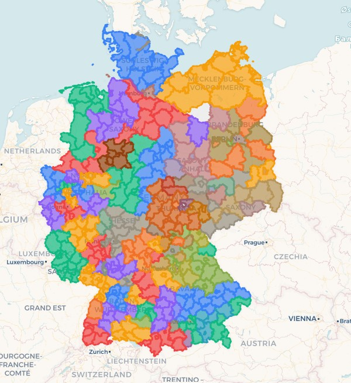

Ihr KI-gestützter Karten-Assistent
Zur AnwendungGeoFuchs ist eine intelligente Anwendung, die auf einer interaktiven Deutschlandkarte mit detaillierten Grenzen von Landkreisen und Städten basiert. Durch die Kombination dieser visuellen Basis mit einem leistungsstarken KI-Assistenten transformieren wir die Art, wie Sie Daten analysieren und Entscheidungen treffen.

Das revolutionäre **Side-by-Side KI-Assistenten-Konzept** ermöglicht Ihnen einen nahtlosen Arbeitsablauf. Statt komplexer Datenanalysen führen Sie einfach einen Dialog, um sofortige, visuelle Ergebnisse zu erhalten.
Günter Struck
Lönsberg 8
45136 Essen, Deutschland
E-Mail: geofuchs@online.de